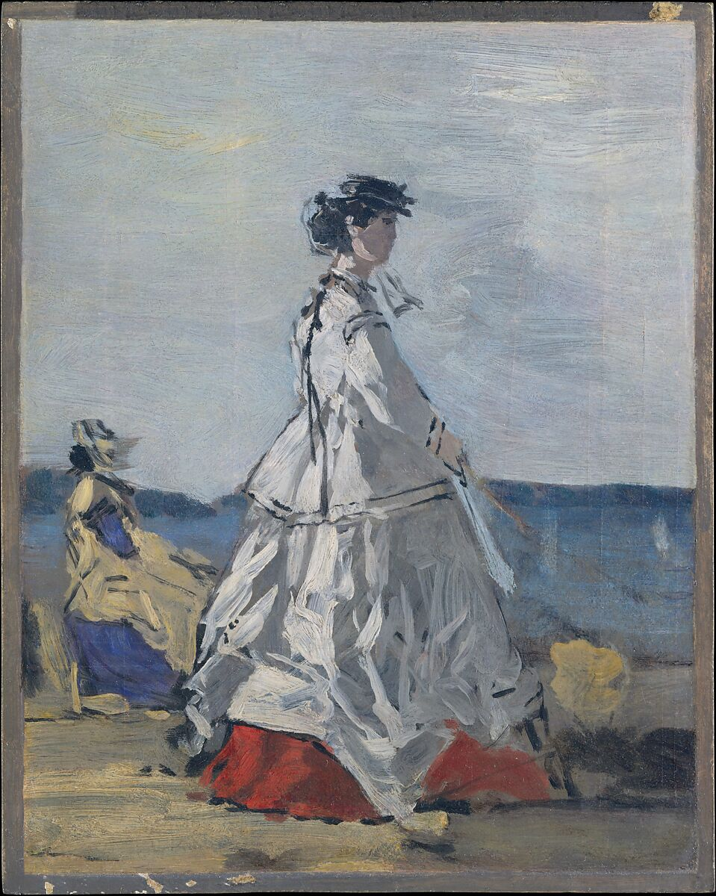
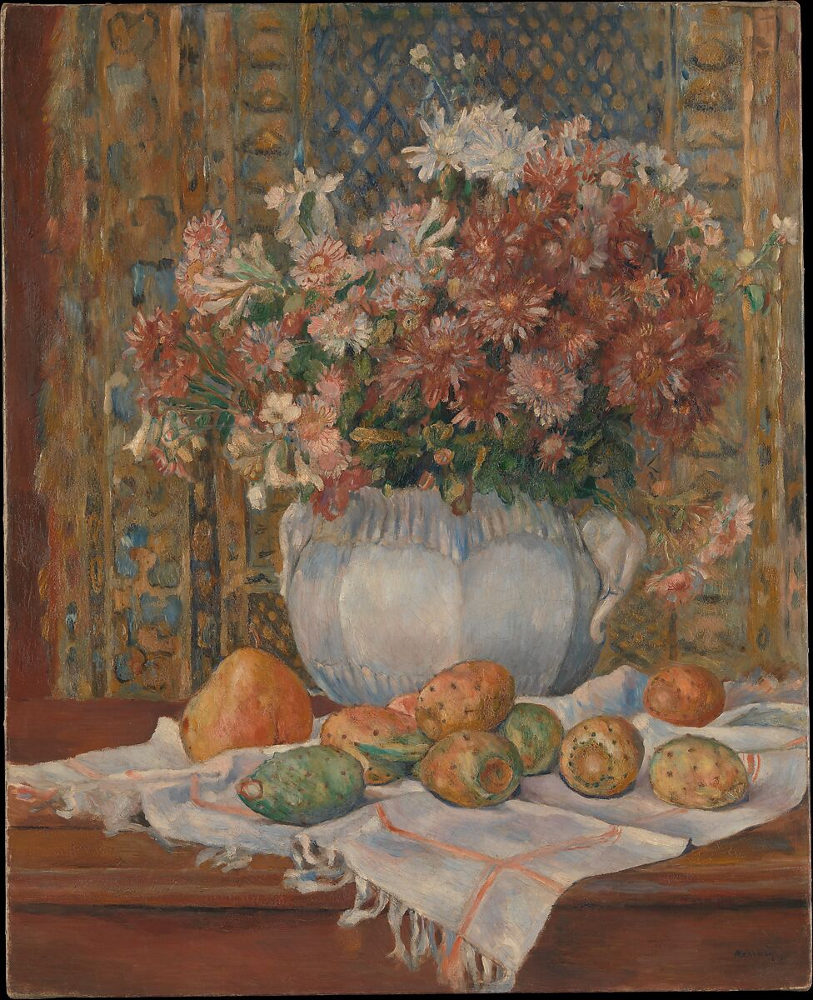
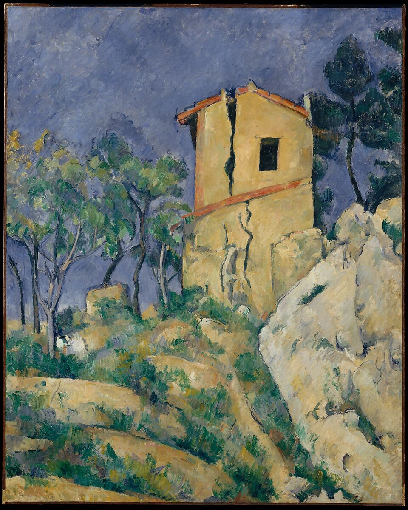
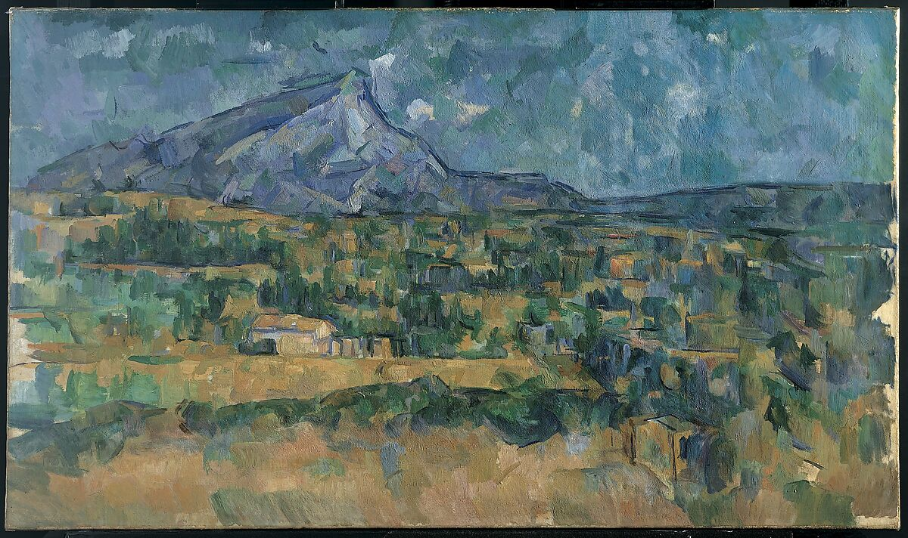
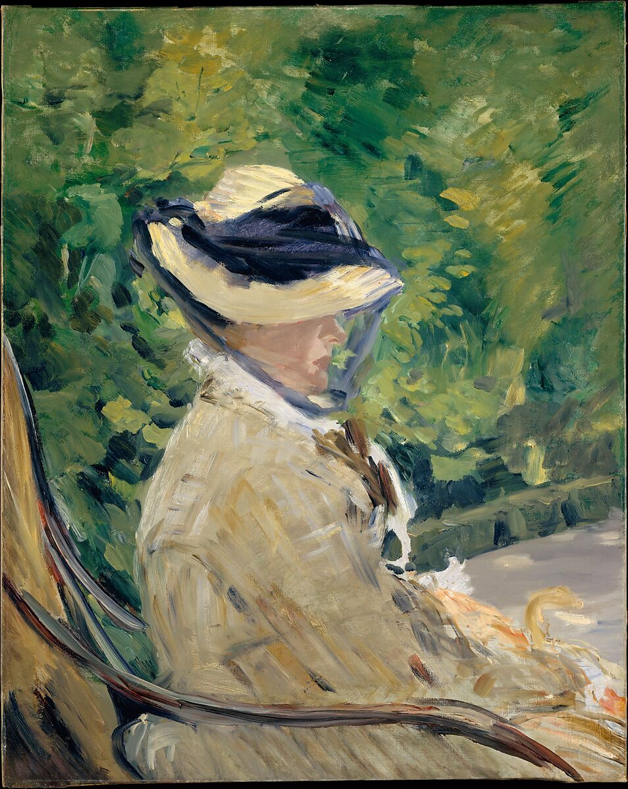
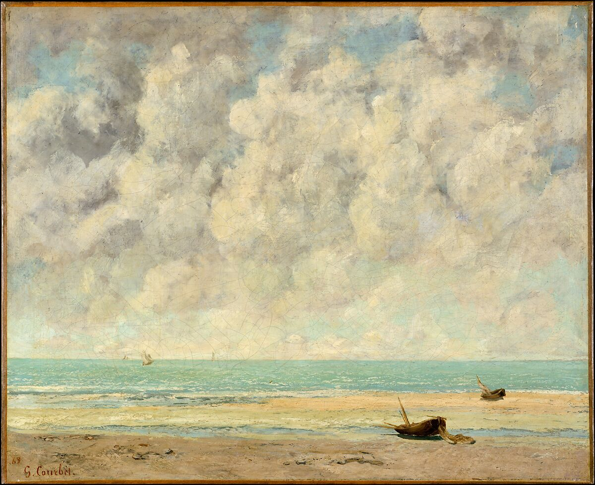
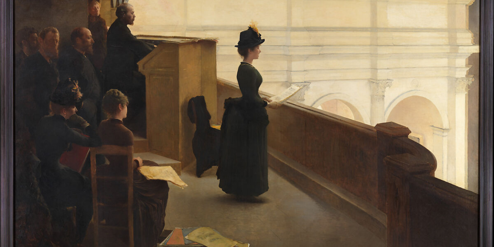
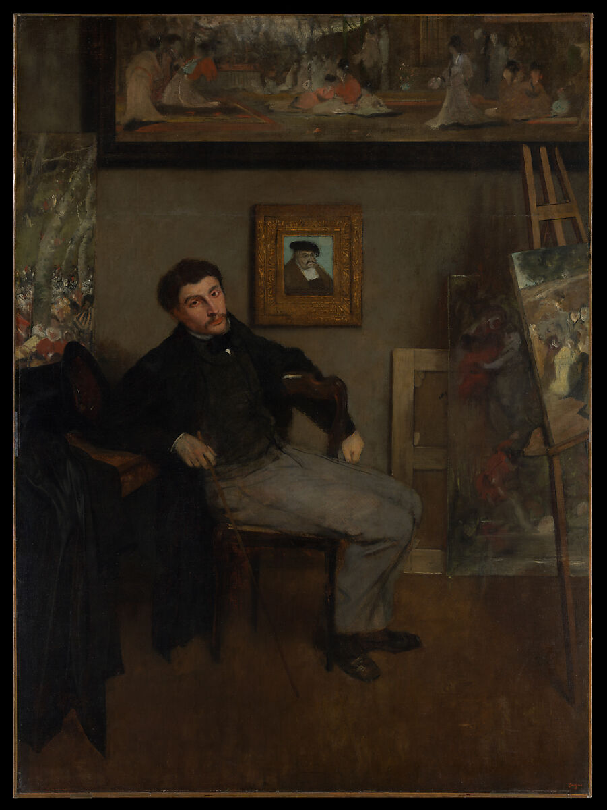
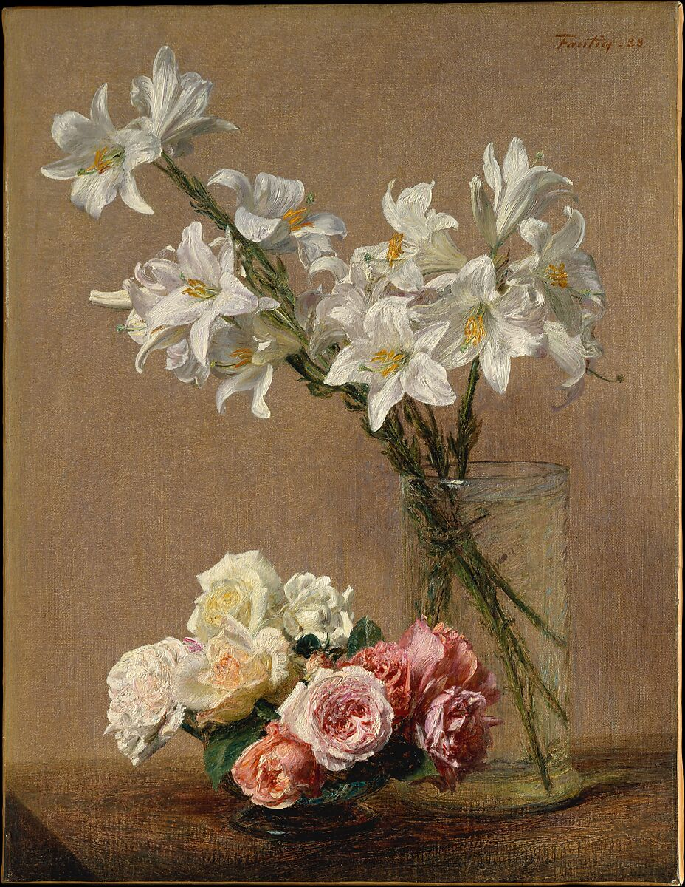

Impressionism
Early Impressionism (1870s and 1880)
Impressionism is one of the most influential art movements of the 19th century, originating in France during the 1860s. It marked a departure from traditional academic painting, embracing new techniques and subjects that reflected the rapidly changing modern world. This movement focused on capturing the transient effects of light, atmosphere, and everyday life, often painted en plein air (outdoors) for immediacy and freshness. The name "Impressionism" derives from Claude Monet's painting Impression, Sunrise (1872), a work that encapsulates the movement's spirit.
title

Princess Pauline Metternich (1836 - 1921) on the Beach by Eugène Boudin

Still Life with flowers and prickly pears by Pierre Auguste Renoire

The House with the Cracked Walls by Paul Cézanne
Key Details
Brushwork: Loose, quick, and visible brushstrokes that convey movement and spontaneity
Color Palette: Emphasis on vibrant, unblended colors rather than dark tones or black
Light & Atmosphere: Fascination with how light changes throughout the day and its effects on color and form
Everyday Life: Focus on modern scenes—urban landscapes, leisure activities, and rural settings
Perspective: A rejection of traditional linear perspective for more intimate and cropped compositions
title

Mont Sainte-Victoire by Paul Cézanne

Madame Manetat Bellevue by Edouard Manet

The Calm Sea by Gustave Courbet
Cultural Impact
Impressionism challenged the rigid conventions of academic art and influenced future art movements such as Post-Impressionism, Fauvism, and Modernism. Its revolutionary approach to color and light continues to inspire artists worldwide.
title

The Organ Rehearsal by Henry Lerolle. Impressionists rejected showing historical, biblical, mythological, or allegorical subjects. They, in fact, loved showing modern life.

James-Jacques-Joseph Tissot by Edgar Degas. The impressionists found inspiration in the new beauty urban experiences could offer.

Roses and Lilies by Henri Fantin-Latour